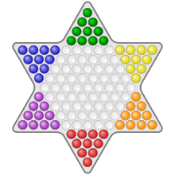
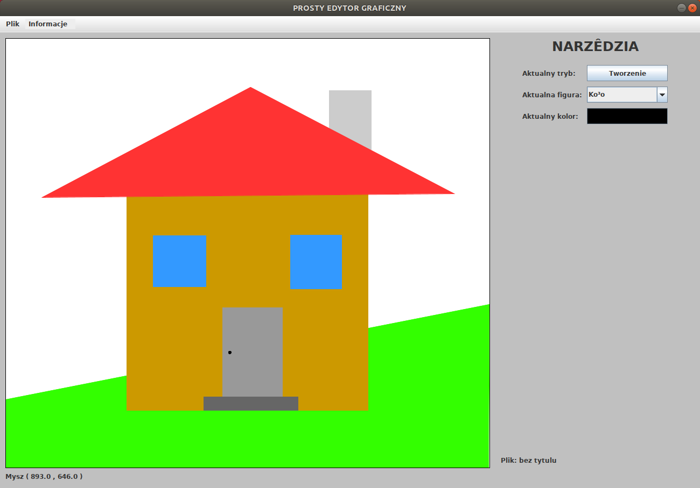

Projekty Informatyczne
Tutaj zobaczysz czym dokładnie się zajmuję, przedstawię Ci dwa projekty z których jestem najbardziej zadowolony. Jeśli chcesz dowiedzieć się więcej o technologiach których używam przejdz do zakładki "Technologie". Wszystkie zródła projektów znajdziesz
na moim GitHub-ie, odnosniki w tytułach artykułów.
Chińskie Warcaby

Projekt realizowany w ramach "Kursu Programowania". Jest to gra dla 2-6 osób rozgrywająca sie na planszy w kształcie 6-ramiennej gwiazdy w której głownym zadaniem jest przejście wszystkimi pionkami na pole przeciwnika, trzymając sie odpowiednich
zasad.
Jest to aplikacja desktopowa. Frontend został zaimplementowany w frameworku javy - JavaFx, natomiast logika gry w czystej Javie. Najtrudniejszą częscią było zaimplementowanie algorytmu który który po kliknięciu na pionek podpowiadał graczowi jakie ruchy
może wykonać, razem z wielokrotnymi przeskokami.
Sklep Komputerowy
Aplikacja desktopowa sklepu komputerowego, była pisana w ramach kursu "Bazy Danych". Symuluje działanie sklepu komputerowego dla 3 aktorów z róznymi prawami dostępu: administratora, sprzedawcy i klienta. Administrator oraz sprzedawca mieli m.in. możliwości
modyfikowania odpowiednich tabel za pomocą interfejsu graficznego, w zależności od swoich praw dostępu. Klient natomiast posiadał opcję założenia konta i zakupu z większością funkcji zaimplementowanych na wielu współczesnych serwisach
aukcyjnych. Frontend aplikacji został napisany w Javie Swing, komunikacja z bazą dancych zrealizowana lokalnie za pomocą natywnych metod Javy. Zapytanie do pazy danych polegało na wwoływaniu odpowiednich procedur napisanych w MySql
które zwracały oczekiwana wartość. Dodatkowo istniały również opcje zarchiwizowania bazy danych i wczytania zarchiwizowanej bazy danych do których użyłem gotowych programów konsolowych.
Prosty Edytor Graficzny
Projekt realizowany na uczelnie. Edytor pozwala rysowoać kształty takie jak: okrąg, prostokąt lub wielokąt. Udostępia opcje kolorowania poszczególnych części obrazka, przesuwania, oraz skalowania kształtów.

Posiadał również opcje zapisu do pliku i wczytania z pliku. Poniżej znajduje się algorytm polegający na zapisie listy obiektów do pliku z rozszerzeniem ".txt".
if(SaveFileName!=null && !SaveFileName.equals("")) {
CurentOpenFile = new File("Zapisana Grafika\\"+SaveFileName);
try {
fos = new FileOutputStream(CurentOpenFile);
oos = new ObjectOutputStream(fos);
oos.writeObject(Figures);
oos.close();
fos.close();
JOptionPane.showMessageDialog(this,"Zapisano!","PLIK",JOptionPane.INFORMATION_MESSAGE);
CurrentOpenFileTitle.setText("Plik: " + SaveFileName);
IsFileSaved=true;
}
catch (IOException ioe) {
SaveFileName=null;
ioe.printStackTrace();
}
}
else if(SaveFileName!=null && SaveFileName.equals("")){
JOptionPane.showMessageDialog(this,"Nie podales nazwy!","PLIK",JOptionPane.ERROR_MESSAGE);
SaveFileName=null;
}